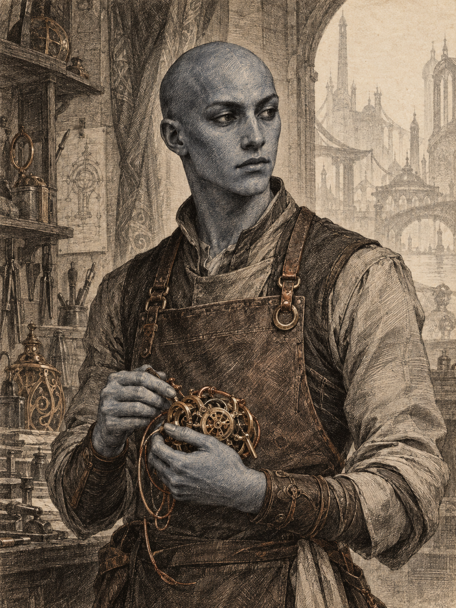

LOMAR
Lomar
- 姓名
- Lomar
- 种族
- 维多肯
- 职业 / 等级
- 奇械师 1 级
- 背景 / 阵营
- 工匠 · 守序中立
01身份资料与核心数值
| 属性 | 力量 | 敏捷 | 体质 | 智力 | 感知 | 魅力 |
|---|---|---|---|---|---|---|
| 数值 / 调整 | 14+2 | 16+3 | 15+2 | 18+4 | 12+1 | 12+1 |
| 豁免 | +2 | +3 | +4 | +6 | +1 | +1 |
- 护甲等级 / 生命值
- AC 17；HP 10 / 10。
- 先攻 / 速度
- +3；30 尺。
- 熟练 / 被动察觉
- +2；11。
- 施法
- 智力；法术豁免 DC 14；一环法术位 2。
- 工具熟练
- 工匠工具。
02战斗、工艺与法术
攻击方式
| 矛 | +4 命中；1d6+2 穿刺；投掷 20/60 尺，多用时 1d8。 |
|---|---|
| 轻弩 | +5 命中；1d8+3 穿刺；射程 80/320 尺，装填、双手。 |
| 硬头锤 | +4 命中；1d6+2 钝击；双手。 |
| 匕首 | +5 命中；1d4+3 穿刺；灵巧、轻型、投掷。 |
| 防护 | 钉皮甲（基础 AC 12）与盾牌（+2）；当前 AC 17。 |
职业与种族能力
- 工艺魔法：持握修补工具时，可在自身 5 尺内未占据空间创造一件物品；完成长休时消失。
- 维多肯式冷静：智力、感知和魅力豁免具有优势。
- 追求卓越，不知疲倦：选择一项技能和一种工具获得熟练；使用所选技能或工具进行属性检定时，掷 d4 并加入结果。
法术与特殊能力
施法属性：智力。法术豁免 DC 14。一环法术位 2。
已准备法术（一环）：鉴定术、弹射。
已知戏法：修复术、魔法伎俩、酸液飞溅。
工具、语言与随身物
盗贼工具、修补工具、木匠工具、皮匠工具、木雕工具、织布工具、石匠工具、铁匠工具。通用语、维多肯语、矮人语。
特殊物品：百变工具。可转换为一种工匠工具；使用该形态时拥有相应熟练。
03装备与人物资料
背景故事
一次实验中，Lomar 被意外传送到这个位面。刚到时，一位好心的矮人工匠收留了他；他在小村庄住过一段日子，也因此学会矮人语。维多肯的天赋与极高的智力让他很快做出了惊人的工艺作品，甚至复刻过一些故乡的机器，于是在村中有了立足之处。
但他始终想回去，所以离开村庄前往大城寻找归乡之法。起初，他很愿意帮助这些新奇的朋友：有人骨折，他会做出能代替拐杖的外骨骼义肢；有人伤心，他会送出能安慰人的小物件。看见别人因他的帮助高兴，他也高兴。
后来他在集市上看见自己送出去的礼物被转卖，甚至还留着他刻下的祝福语。那次以后，他不再轻易把亲手做的东西交给别人，也会怀疑直接给钱是否更有用。即便如此，当他确认有人真的需要帮助时，仍常常会妥协于自己的善意。